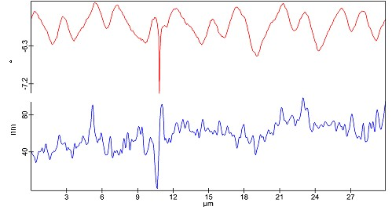

|
提示
|

图1：带有伪影的相位[M]（红色）和相应的形貌[L]（蓝色）
如果悬臂梁在第二通道期间与样品碰撞，测量中会产生伪影。从图1可以看出，第二通道相位中约10.5 µm处的异常与形貌中的一个大台阶相关。如果发生这种情况，可以选择更高的Z偏移。这对于高形貌通常也是必要的。然而，过高的Z偏移会导致较低的对比度，因为大多数力在靠近样品时更强。因此，另一种方法是使用 前瞻 值，这会在真正到达形貌前做出反应。
为了加快测量速度，可以减少 最短回程时间 参数。另一方面，这也可能给探针带来更多的应力。因此，适当的折衷非常重要。
更多信息：